FALLECIDOS
 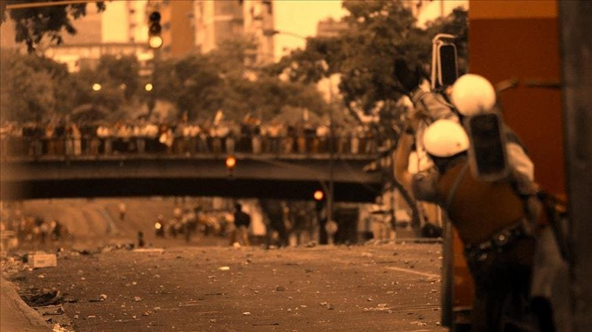
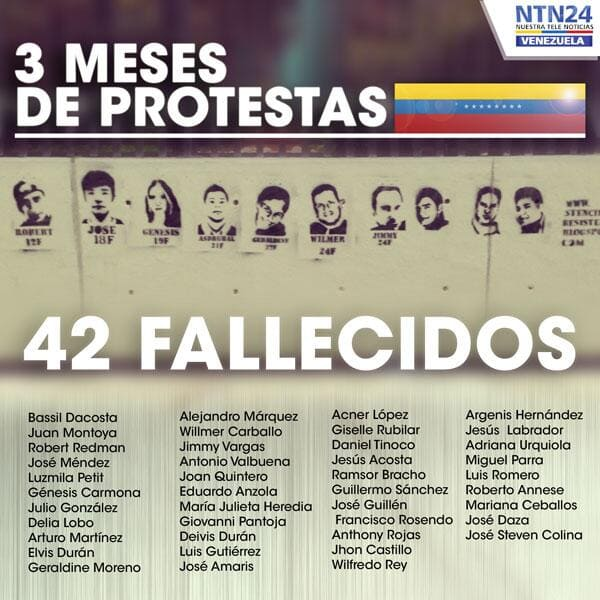
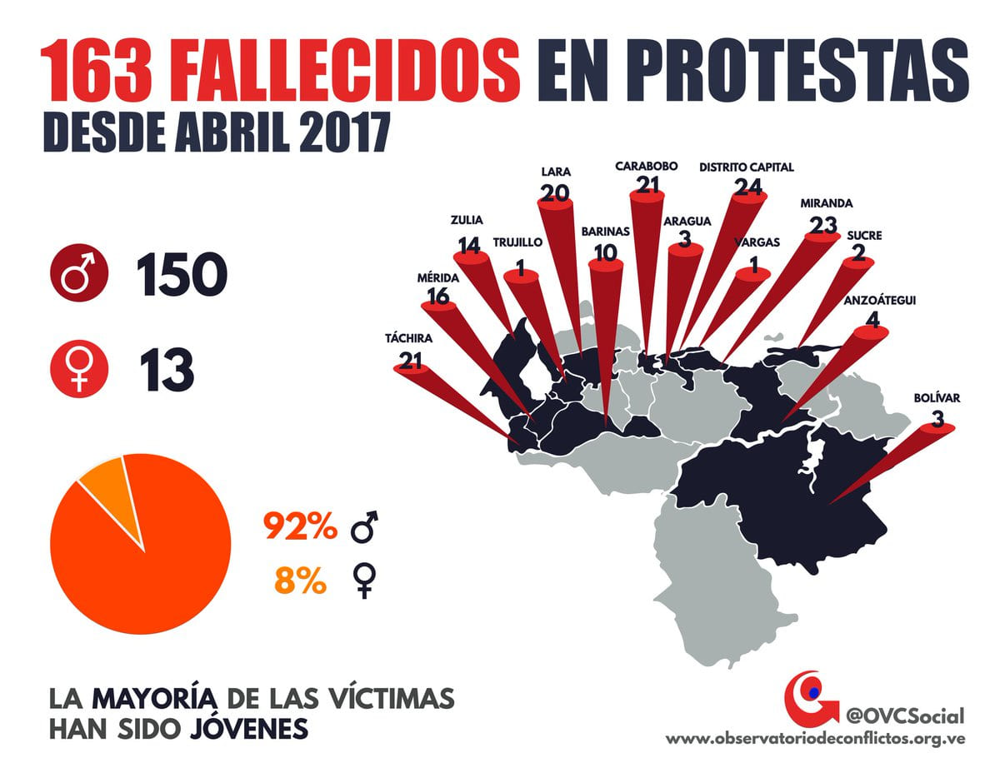
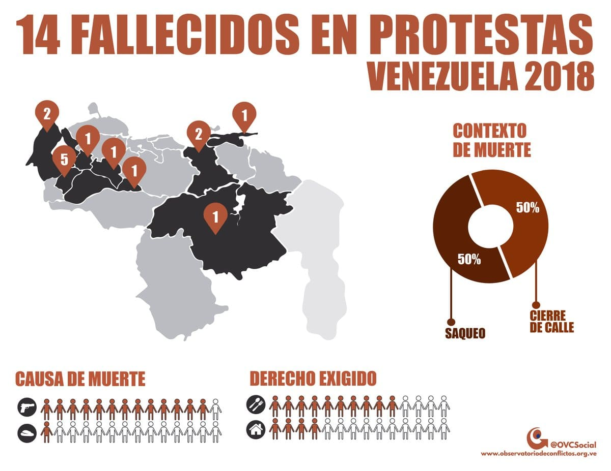
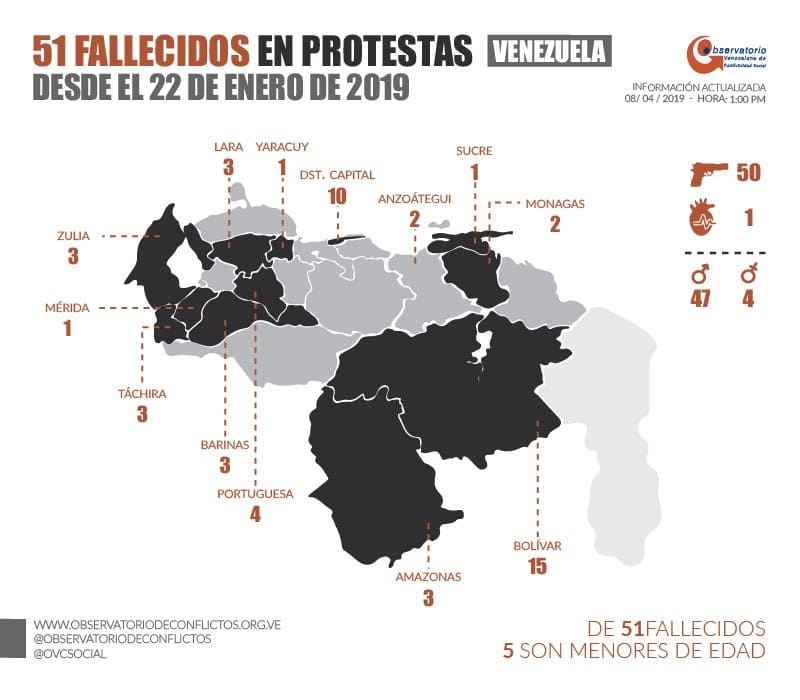
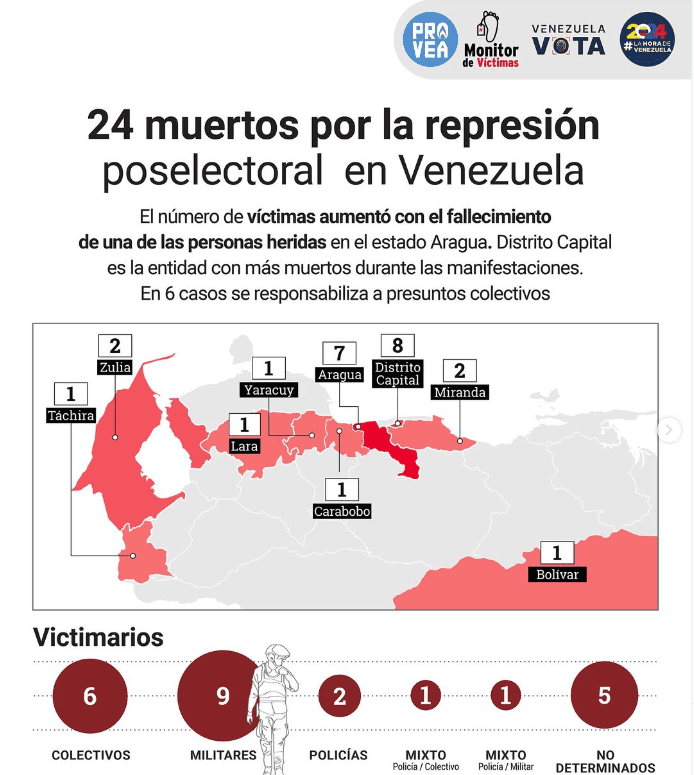
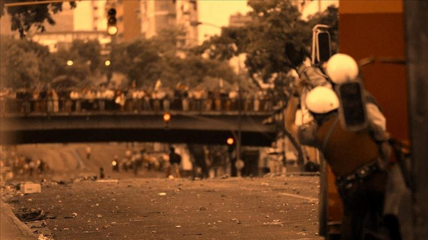
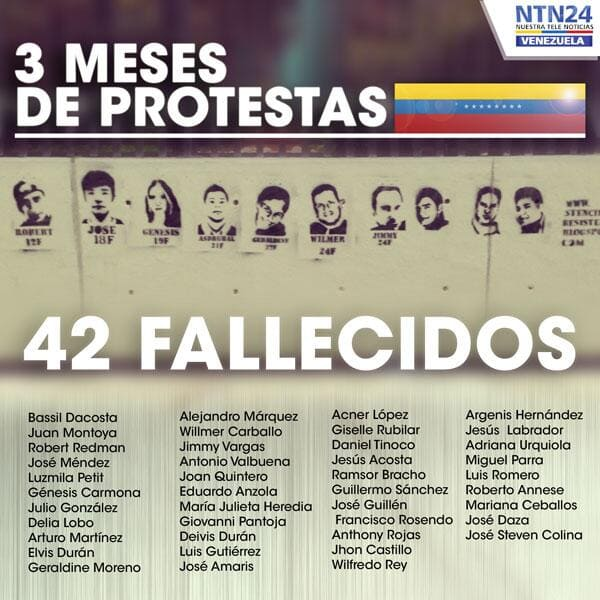
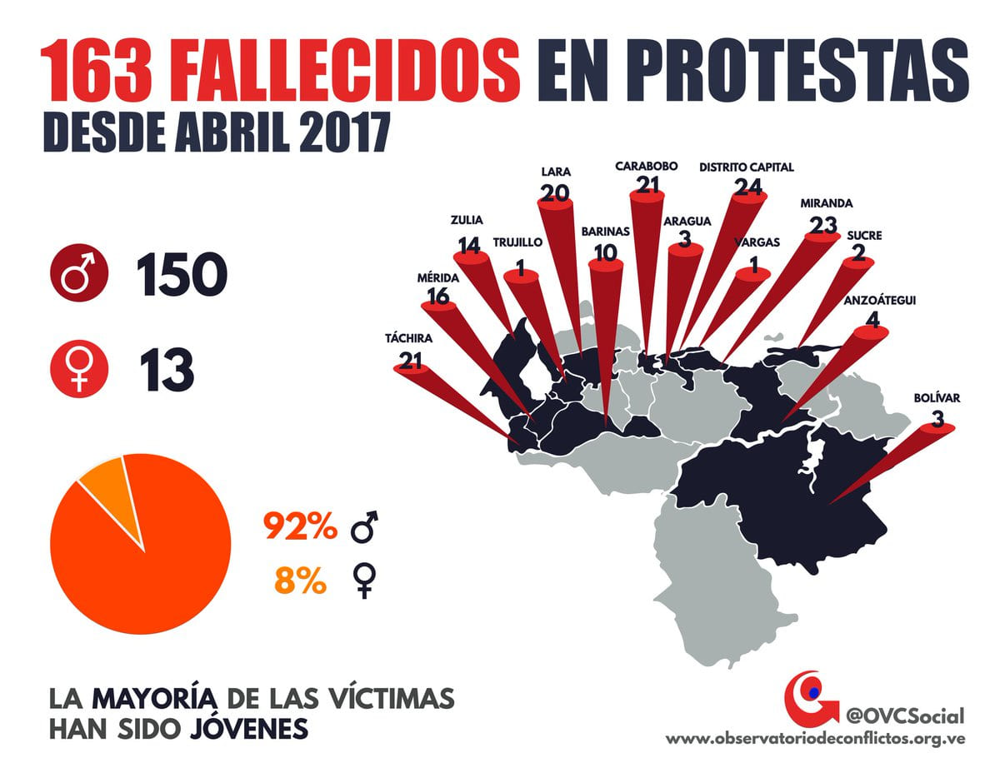
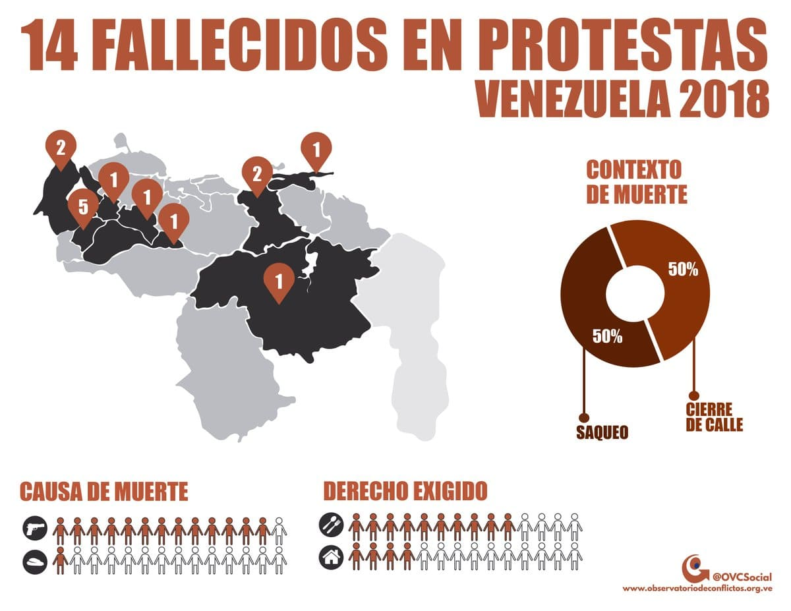
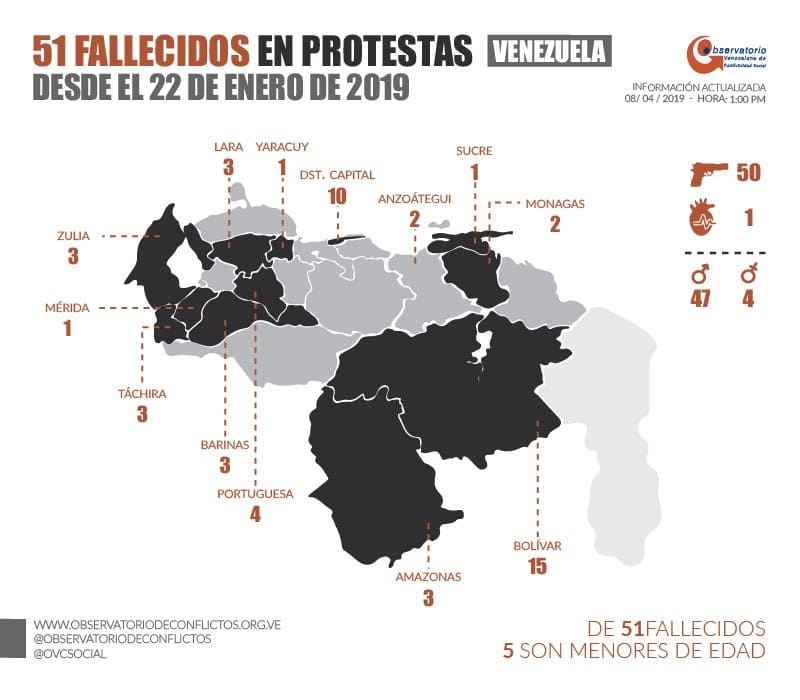
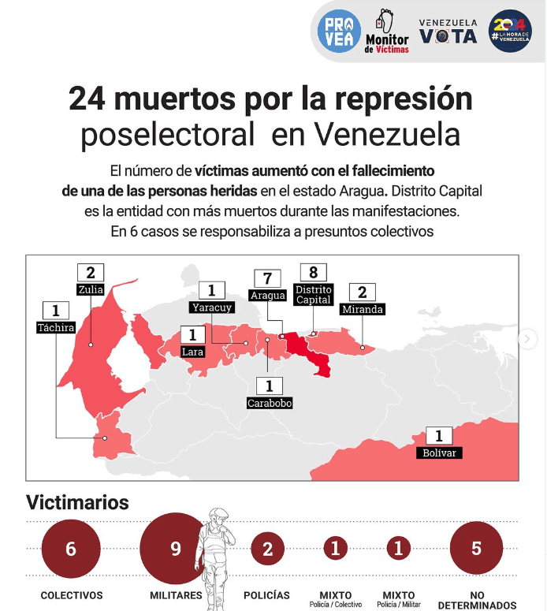
En Venezuela desde el 2002 aproximadamente a la fecha de hoy el estimado de fallecidos de un estimado de mas de 450 fallecidos y solo en el gobierno dictatorial de Nicolas Maduro son hasta la fecha unos 334 fallecidos. Esto se debe a la impunidad total que se vive dentro de suelo venezolano donde todos los poderes se centran en un solo individuo o un grupo mafioso llamado el cartel de los soles, hay mas de 250 desaparecidos donde no se sabe su paradero y oficialmente mas de 3000 detenidos o secuestrados forzosamente solo por tener una ideologia politica distinta a la que tiene el gobierno dictatorial. Entre los muertos el porcentaje mayor son jovenes varones entre 15 a 32 años. 2024 ha sido el año con mayor muerte y secuestros forzosos de menores de edad. el 28 de julio de 2024 el pueblo venezolano logro demostrar democraticamente que no queria mas el gobierno actual. El poder electoral fraudulento a la fecha no ha dado los resultados oficiales fidedignos, viendose en nuevas protestas y donde en solo una semana asesinaron 27 personas, 1300 heridos y mas de 2500 detenciones forzosas.